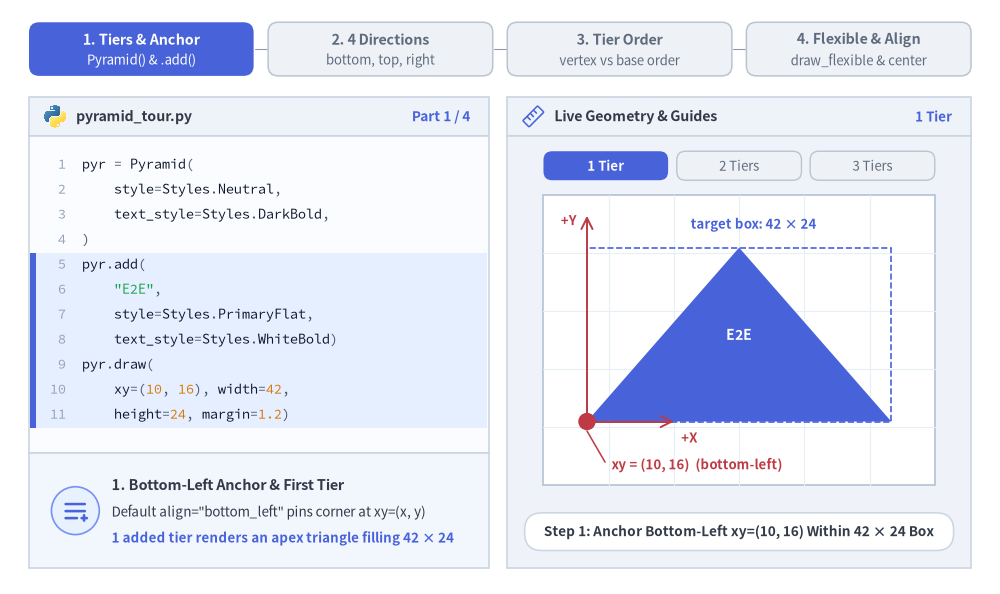

Pyramid
The Pyramid component renders tiered hierarchical trapezoids crowned by an apex triangle.
It supports standard upright pyramids, inverted funnels, horizontal orientations, and custom per-tier heights—making it ideal for software testing pyramids, DIKW knowledge hierarchies, defense-in-depth tiers, and conversion funnels.

Source Code
from drawlib.canvas import save, setup
from drawlib.shapes import circle
from drawlib.smartarts import Pyramid
from drawlib.styles import Styles
from drawlib.text import text
setup(width=130, height=48)
p = Pyramid(
style=Styles.Neutral,
text_style=Styles.DarkBold.patch(text_size=10.0),
)
p.add("1", style=Styles.PrimaryFlat, text_style=Styles.WhiteBold.patch(text_size=10.0))
p.add("2", style=Styles.PrimaryNeutral)
p.add("3", style=Styles.SecondaryNeutral)
panels = [
("bottom", (4.0, 9.5), "direction='bottom'\n(Upright)"),
("top", (36.0, 9.5), "direction='top'\n(Inverted)"),
("left", (68.0, 9.5), "direction='left'\n(Apex Right)"),
("right", (100.0, 9.5), "direction='right'\n(Apex Left)"),
]
for dir_val, (px, py), label in panels:
text((px + 13.0, 41.5), label, style=Styles.BlackBold.patch(text_size=10.0))
p.draw(xy=(px, py), width=26.0, height=25.0, margin=1.0, direction=dir_val, order="vertex_to_base")
circle((px, py), radius=1.0, style=Styles.DangerFlat)
text((px + 13.0, 4.0), f"xy=({int(px)}, 9.5)", style=Styles.DangerBold.patch(text_size=10.0))
save()
1. Core Concepts & Basic Usage
Pyramid builds tiered hierarchies and conversion funnels step-by-step via .add(...), anchoring by default at the Bottom-Left xy=(x, y) bounding-box corner (or its center when align="center"). You can rotate the wide base across all 4 direction orientations ("bottom", "top", "left", "right"), choose "vertex_to_base" vs. "base_to_vertex" ordering, and pass custom per-tier heights via draw_flexible(...) or hide .items[i] slices without shifting sibling geometry:

Source Code
from __future__ import annotations
from drawlib.anim import Animation
from drawlib.canvas import save, setup
from drawlib.icons import code as code_icons
from drawlib.icons import phosphor
from drawlib.lines import line
from drawlib.shapes import circle, polygon, rectangle
from drawlib.smartarts import Pyramid, SourceCode, SourceCodeStyles
from drawlib.styles import Styles
from drawlib.text import text
W, H = 138.0, 82.0
setup(width=W, height=H)
anim = Animation(fps=10.0, loop=0)
CODE_TEXT_SIZE = 10.0
PT_TO_CANVAS = W / 720.0
FONT_CANVAS = CODE_TEXT_SIZE * PT_TO_CANVAS
LINE_H = FONT_CANVAS * 1.8
PAD_Y = FONT_CANVAS * 1.2
CODE_STYLES = SourceCodeStyles.get("default", font_lang="en", text_size=CODE_TEXT_SIZE).patch(
box_style=Styles.Neutral.patch(shape_fill_color=(0, 0, 0, 0), shape_line_width=0),
)
PANE_HEADER = Styles.Neutral.patch(
shape_fill_color=(238, 243, 250),
shape_line_color=(203, 213, 225),
shape_line_width=1.2,
shape_r=0.0,
)
EDITOR_BODY = Styles.Neutral.patch(
shape_fill_color=(250, 252, 255),
shape_line_color=(203, 213, 225),
shape_line_width=1.2,
shape_r=0.0,
)
TAKEAWAY_BODY = Styles.Neutral.patch(
shape_fill_color=(242, 246, 253),
shape_line_color=(203, 213, 225),
shape_line_width=1.2,
shape_r=0.0,
)
STUDIO_BODY = Styles.Neutral.patch(
shape_fill_color=(239, 243, 249),
shape_line_color=(203, 213, 225),
shape_line_width=1.2,
shape_r=0.0,
)
PART_ITEMS = [
("1. Tiers & Anchor", "Pyramid() & .add()"),
("2. 4 Directions", "bottom, top, right"),
("3. Tier Order", "vertex vs base order"),
("4. Flexible & Align", "draw_flexible & center"),
]
def draw_step_bar(active_part: int) -> None:
"""Draw top 4-part progress bar (active_part is 1..4)."""
pill_w = 31.0
pill_h = 7.4
gap = 2.0
start_x = 4.0 + pill_w / 2.0
cy = 75.2
for idx, (label, sublabel) in enumerate(PART_ITEMS, start=1):
cx = start_x + (idx - 1) * (pill_w + gap)
if idx > 1:
prev_cx = cx - (pill_w + gap)
line(
(prev_cx + pill_w / 2.0 + 0.2, cy),
(cx - pill_w / 2.0 - 0.2, cy),
style=Styles.PrimaryBold if idx <= active_part else Styles.MutedThin,
)
if idx == active_part:
st = Styles.PrimaryFlat.patch(shape_r=1.4)
tst = Styles.WhiteBold.patch(text_size=10.3)
sub_tst = Styles.White.patch(text_size=9.5)
elif idx < active_part:
st = Styles.PrimaryNeutral.patch(shape_r=1.4, shape_line_width=1.1)
tst = Styles.PrimaryBold.patch(text_size=10.3)
sub_tst = Styles.Primary.patch(text_size=9.5)
else:
st = Styles.Neutral.patch(shape_r=1.4, shape_line_width=1.1)
tst = Styles.MutedBold.patch(text_size=10.3)
sub_tst = Styles.Muted.patch(text_size=9.5)
rectangle((cx, cy), width=pill_w, height=pill_h, style=st)
text((cx, cy + 1.35), label, style=tst)
text((cx, cy - 1.55), sublabel, style=sub_tst)
def draw_left_pane(
active_part: int,
code_lines: list[str],
hl_range: tuple[int, int],
icon_fn: object,
summary_title: str,
summary_line1: str,
summary_line2: str,
) -> None:
"""Draw left Python code editor + bottom concept takeaway card."""
x0, w = 4.0, 63.5
cx = x0 + w / 2.0
top_y = 63.2
header_h = 5.4
editor_h = 43.8
takeaway_h = 15.8
rectangle((cx, top_y + header_h / 2.0), width=w, height=header_h, style=PANE_HEADER)
code_icons.python((x0 + 3.6, top_y + header_h / 2.0), width=3.4, style=Styles.Neutral)
text(
(x0 + 6.5, top_y + header_h / 2.0),
"pyramid_tour.py",
style=Styles.DarkBold.patch(text_size=10.2, halign="left"),
)
text(
(x0 + w - 2.6, top_y + header_h / 2.0),
f"Part {active_part} / 4",
style=Styles.PrimaryBold.patch(text_size=9.8, halign="right"),
)
rectangle((cx, top_y - editor_h / 2.0), width=w, height=editor_h, style=EDITOR_BODY)
hl_start, hl_end = hl_range
hl_top = top_y - PAD_Y - hl_start * LINE_H
hl_bot = top_y - PAD_Y - (hl_end + 1) * LINE_H
hl_cy = (hl_top + hl_bot) / 2.0
hl_h = hl_top - hl_bot
rectangle(
(cx, hl_cy),
width=w - 0.6,
height=hl_h,
style=Styles.Neutral.patch(shape_fill_color=(229, 239, 255), shape_line_width=0),
)
rectangle(
(x0 + 0.55, hl_cy),
width=0.9,
height=hl_h,
style=Styles.PrimaryFlat.patch(shape_line_width=0),
)
SourceCode.draw(
xy=(x0, top_y),
width=w,
code="\n".join(code_lines),
styles=CODE_STYLES,
code_lang="python",
show_linenum=True,
align="top_left",
)
take_cy = 3.6 + takeaway_h / 2.0
rectangle((cx, take_cy), width=w, height=takeaway_h, style=TAKEAWAY_BODY)
circle(
(x0 + 6.4, take_cy),
radius=3.3,
style=Styles.PrimaryNeutral.patch(shape_line_width=1.2),
)
icon_fn((x0 + 6.4, take_cy), width=3.8, style=Styles.PrimaryBold) # type: ignore[operator]
text(
(x0 + 11.4, take_cy + 3.6),
summary_title,
style=Styles.DarkBold.patch(text_size=10.4, halign="left"),
)
text(
(x0 + 11.4, take_cy - 0.2),
summary_line1,
style=Styles.Dark.patch(text_size=9.7, halign="left"),
)
text(
(x0 + 11.4, take_cy - 3.8),
summary_line2,
style=Styles.PrimaryBold.patch(text_size=9.6, halign="left"),
)
def draw_geometry_studio(param_badge: str, footer_caption: str) -> tuple[float, float]:
"""Draw right geometry lab shell, inner 54x40 coordinate sheet, and footer."""
x0, w = 70.0, 64.0
cx = x0 + w / 2.0
top_y = 63.2
header_h = 5.4
body_h = 59.6
rectangle((cx, top_y + header_h / 2.0), width=w, height=header_h, style=PANE_HEADER)
phosphor.ruler((x0 + 3.6, top_y + header_h / 2.0), width=3.4, style=Styles.Primary)
text(
(x0 + 6.5, top_y + header_h / 2.0),
"Live Geometry & Guides",
style=Styles.DarkBold.patch(text_size=10.2, halign="left"),
)
text(
(x0 + w - 2.6, top_y + header_h / 2.0),
param_badge,
style=Styles.PrimaryBold.patch(text_size=9.6, halign="right"),
)
rectangle((cx, 3.6 + body_h / 2.0), width=w, height=body_h, style=STUDIO_BODY)
sheet_cx, sheet_cy = cx, 35.0
sheet_w, sheet_h = 54.0, 40.0
sx0, sy0 = sheet_cx - sheet_w / 2.0, sheet_cy - sheet_h / 2.0
rectangle(
(sheet_cx, sheet_cy),
width=sheet_w,
height=sheet_h,
style=Styles.Neutral.patch(
shape_fill_color=(255, 255, 255),
shape_line_color=(180, 194, 214),
shape_line_width=1.2,
),
)
g_st = Styles.MutedThin.patch(line_color=(232, 238, 246), line_width=0.8)
for gx in range(1, 6):
vx = sx0 + gx * (sheet_w / 6.0)
line((vx, sy0), (vx, sy0 + sheet_h), style=g_st)
for gy in range(1, 5):
vy = sy0 + gy * (sheet_h / 5.0)
line((sx0, vy), (sx0 + sheet_w, vy), style=g_st)
rectangle(
(cx, 8.6),
width=59.2,
height=5.2,
style=Styles.Neutral.patch(
shape_fill_color=(255, 255, 255),
shape_line_color=(203, 213, 225),
shape_line_width=1.1,
shape_r=2.4,
),
text=footer_caption,
text_style=Styles.DarkBold.patch(text_size=9.8),
)
return sheet_cx, sheet_cy
def draw_sub_pills(scx: float, labels: list[str], active_idx: int) -> None:
"""Draw 3-step tracker pills above the studio coordinate sheet."""
pw, ph, pgap = 17.2, 4.0, 1.2
p_start = scx - (3 * pw + 2 * pgap) / 2.0 + pw / 2.0
for idx, lbl in enumerate(labels):
px = p_start + idx * (pw + pgap)
if idx == active_idx:
pst = Styles.PrimaryFlat.patch(shape_r=1.2)
ptst = Styles.WhiteBold.patch(text_size=9.5)
elif idx < active_idx:
pst = Styles.PrimaryNeutral.patch(shape_r=1.2, shape_line_width=1.0)
ptst = Styles.PrimaryBold.patch(text_size=9.5)
else:
pst = Styles.Neutral.patch(shape_r=1.2, shape_line_width=1.0)
ptst = Styles.Muted.patch(text_size=9.5)
rectangle((px, 59.1), width=pw, height=ph, style=pst, text=lbl, text_style=ptst)
TITLE_DARK = Styles.DarkBold.patch(text_size=10.0)
TITLE_WHITE = Styles.WhiteBold.patch(text_size=10.0)
# =========================================================================
# Part 1: Tiers & Anchor — Bottom-Left xy & Progressive 1 -> 2 -> 3 Tiers
# =========================================================================
PART1_STATES = [
(
1,
3.2,
[
"pyr = Pyramid(",
" style=Styles.Neutral,",
" text_style=Styles.DarkBold,",
")",
"pyr.add(",
' "E2E",',
" style=Styles.PrimaryFlat,",
" text_style=Styles.WhiteBold)",
"pyr.draw(",
" xy=(10, 16), width=42,",
" height=24, margin=1.2)",
],
(4, 10),
"1 Tier",
"Step 1: Anchor Bottom-Left xy=(10, 16) Within 42 × 24 Box",
"1. Bottom-Left Anchor & First Tier",
'Default align="bottom_left" pins corner at xy=(x, y)',
"1 added tier renders an apex triangle filling 42 × 24",
),
(
2,
3.3,
[
"pyr = Pyramid(",
" style=Styles.Neutral,",
" text_style=Styles.DarkBold)",
'pyr.add("E2E",',
" style=Styles.PrimaryFlat)",
"pyr.add(",
' "Integ",',
" style=Styles.PrimaryNeutral)",
"pyr.draw(",
" xy=(10, 16), width=42,",
" height=24, margin=1.2)",
],
(5, 7),
"2 Tiers",
"Step 2: Second .add() Splits Height with margin=1.2 Gap",
"2. Automatic Trapezoid Subdivision",
"1st item stays at apex; 2nd item forms trapezoid below",
"Uniform tier height = (height - sum(margins)) / N",
),
(
3,
3.5,
[
"pyr = Pyramid(",
" style=Styles.Neutral, ...)",
'pyr.add("E2E",',
" style=Styles.PrimaryFlat)",
'pyr.add("Integ")',
"pyr.add(",
' "Unit",',
" style=Styles.SecondaryNeutral)",
"pyr.draw(",
" xy=(10, 16), width=42,",
" height=24, margin=1.2)",
],
(5, 7),
"3 Tiers",
"Step 3: Balanced 3-Tier Testing Hierarchy Within 42 × 24",
"3. Balanced 3-Tier Hierarchy",
"Calm neutral base tiers ground 1 focal PrimaryFlat apex",
"All tiers remain locked inside the 42 × 24 target box",
),
]
for p1_idx, (n_tiers, dur, code_p1, hl_rng, badge_txt, foot_txt, s_t, s_1, s_2) in enumerate(PART1_STATES):
with anim.frame(duration=dur):
draw_step_bar(1)
draw_left_pane(1, code_p1, hl_rng, phosphor.list_plus, s_t, s_1, s_2)
scx, scy = draw_geometry_studio(badge_txt, foot_txt)
draw_sub_pills(scx, ["1 Tier", "2 Tiers", "3 Tiers"], p1_idx)
px0, py0, pw, ph = 81.0, 23.8, 42.0, 24.0
pyr = Pyramid(style=Styles.Neutral, text_style=TITLE_DARK)
pyr.add("E2E", style=Styles.PrimaryFlat, text_style=TITLE_WHITE)
if n_tiers >= 2:
pyr.add("Integ", style=Styles.PrimaryNeutral)
if n_tiers >= 3:
pyr.add("Unit", style=Styles.SecondaryNeutral)
pyr.draw(xy=(px0, py0), width=pw, height=ph, margin=1.2)
rectangle(
(px0 + pw / 2.0, py0 + ph / 2.0),
width=pw,
height=ph,
style=Styles.PrimaryDashed.patch(shape_fill_color=(0, 0, 0, 0), shape_line_width=1.2),
)
text(
(px0 + pw / 2.0 + 2.0, py0 + ph + 3.2),
"target box: 42 × 24",
style=Styles.PrimaryBold.patch(text_size=9.5),
)
line((px0, py0), (px0, py0 + ph + 4.4), arrow_head="->", style=Styles.DangerBold.patch(line_width=1.4))
text((px0 - 1.4, py0 + ph + 3.8), "+Y", style=Styles.DangerBold.patch(text_size=9.5, halign="right"))
line((px0, py0), (px0 + 12.0, py0), arrow_head="->", style=Styles.DangerBold.patch(line_width=1.4))
text((px0 + 13.0, py0 - 2.2), "+X", style=Styles.DangerBold.patch(text_size=9.5, halign="left"))
circle((px0, py0), radius=1.2, style=Styles.DangerFlat)
line((px0, py0 - 1.3), (px0 + 2.5, 18.2), style=Styles.DangerBold.patch(line_width=1.1))
text(
(px0 + 3.4, 17.8),
"xy = (10, 16) (bottom-left)",
style=Styles.DangerBold.patch(text_size=9.5, halign="left"),
)
# =========================================================================
# Part 2: 4 Directions — bottom, top, right (and left)
# =========================================================================
PART2_STATES = [
(
"bottom",
3.3,
[
"pyr = Pyramid(",
" style=Styles.Neutral,",
" text_style=Styles.DarkBold)",
'pyr.add("E2E",',
" style=Styles.PrimaryFlat)",
'pyr.add("Integ")',
'pyr.add("Unit")',
"pyr.draw(",
" (10, 16), width=42, height=24,",
' margin=1.2, direction="bottom"',
")",
],
(8, 9),
'direction="bottom"',
'direction="bottom" (Default): Wide Base at Bottom, Apex Up',
'Upright Pyramid (direction="bottom")',
"direction names the edge where the wide base sits",
'Default "bottom" points the triangular apex upward',
),
(
"top",
3.3,
[
"pyr = Pyramid(",
" style=Styles.Neutral,",
" text_style=Styles.DarkBold)",
'pyr.add("E2E",',
" style=Styles.PrimaryFlat)",
'pyr.add("Integ")',
'pyr.add("Unit")',
"pyr.draw(",
" (10, 16), width=42, height=24,",
' margin=1.2, direction="top")',
],
(8, 9),
'direction="top"',
'direction="top": Wide Base at Top for Inverted Funnels',
'Inverted Funnel (direction="top")',
"Places wide base at top and apex pointing downward",
"xy still anchors the bottom-left bounding-box corner",
),
(
"right",
3.5,
[
"pyr = Pyramid(",
" style=Styles.Neutral, ...)",
'pyr.add("E2E",',
" style=Styles.PrimaryFlat)",
'pyr.add("API")',
'pyr.add("Unit")',
"# width=base(Y), height=span(X)",
"pyr.draw(",
" (12, 15), width=26, height=38,",
' margin=1.2, direction="right")',
],
(7, 9),
'direction="right"',
'direction="right": Base on Right, Apex Pointing Left',
'Horizontal Wedge ("right" & "left")',
"width sets vertical base span; height sets X altitude",
'Keep labels concise; "left" mirrors with base on left',
),
]
for p2_idx, (dir_mode, dur, code_p2, hl_rng, badge_txt, foot_txt, s_t, s_1, s_2) in enumerate(PART2_STATES):
with anim.frame(duration=dur):
draw_step_bar(2)
draw_left_pane(2, code_p2, hl_rng, phosphor.compass, s_t, s_1, s_2)
scx, scy = draw_geometry_studio(badge_txt, foot_txt)
draw_sub_pills(scx, ['"bottom"', '"top"', '"right"'], p2_idx)
pyr = Pyramid(style=Styles.Neutral, text_style=TITLE_DARK)
pyr.add("E2E", style=Styles.PrimaryFlat, text_style=TITLE_WHITE)
pyr.add("API" if dir_mode == "right" else "Integ", style=Styles.PrimaryNeutral)
pyr.add("Unit", style=Styles.SecondaryNeutral)
if dir_mode == "bottom":
px0, py0, pw, ph = 81.0, 23.0, 42.0, 24.0
pyr.draw(xy=(px0, py0), width=pw, height=ph, margin=1.2, direction="bottom")
line((px0, py0 - 1.2), (px0 + pw, py0 - 1.2), style=Styles.PrimaryBold.patch(line_width=2.4))
text((scx, 18.2), 'wide base on "bottom" • apex up', style=Styles.PrimaryBold.patch(text_size=9.5))
circle((px0, py0), radius=1.1, style=Styles.DangerFlat)
elif dir_mode == "top":
px0, py0, pw, ph = 81.0, 22.0, 42.0, 24.0
pyr.draw(xy=(px0, py0), width=pw, height=ph, margin=1.2, direction="top")
line((px0, py0 + ph + 1.2), (px0 + pw, py0 + ph + 1.2), style=Styles.PrimaryBold.patch(line_width=2.4))
text((scx, py0 + ph + 4.2), 'wide base on "top" • apex down', style=Styles.PrimaryBold.patch(text_size=9.5))
circle((px0, py0), radius=1.1, style=Styles.DangerFlat)
text((px0 + 2.2, 18.2), "xy (bottom-left)", style=Styles.DangerBold.patch(text_size=9.5, halign="left"))
else:
px0, py0, base_w, alt_h = 82.0, 22.5, 26.0, 38.0
pyr.draw(xy=(px0, py0), width=base_w, height=alt_h, margin=1.2, direction="right")
line((px0 + alt_h + 1.4, py0), (px0 + alt_h + 1.4, py0 + base_w), style=Styles.PrimaryBold.patch(line_width=2.4))
text((px0 + alt_h / 2.0, py0 + base_w + 3.0), "height = 38 (X altitude)", style=Styles.PrimaryBold.patch(text_size=9.5))
text((scx, 18.0), 'wide base on "right" • width = 26 (Y)', style=Styles.PrimaryBold.patch(text_size=9.5))
circle((px0, py0), radius=1.1, style=Styles.DangerFlat)
# =========================================================================
# Part 3: Tier Order — vertex_to_base vs. base_to_vertex
# =========================================================================
PART3_STATES = [
(
"top",
"vertex_to_base",
3.3,
"vertex_to_base",
'order="vertex_to_base": 1st .add() Lands at Apex',
'Default Order ("vertex_to_base")',
"Places 1st .add() at narrow vertex, last at wide base",
'With direction="top", items[0] lands at bottom tip',
),
(
"top",
"base_to_vertex",
3.4,
"base_to_vertex",
'order="base_to_vertex": Natural Top-Down Funnel!',
'Natural Funnel Order ("base_to_vertex")',
"Places 1st .add() at wide top intake, last at apex",
"Reads top-to-bottom in exact Python .add() sequence",
),
(
"bottom",
"base_to_vertex",
3.4,
"bottom + base",
'direction="bottom" + "base_to_vertex": Base-Up Stack',
"Foundation-Up Hierarchy",
'With direction="bottom", 1st .add() sits at wide base',
"Builds upward from foundation [0] to crown apex [2]",
),
]
for p3_idx, (d_ord, ord_val, dur, badge_txt, foot_txt, s_t, s_1, s_2) in enumerate(PART3_STATES):
code_p3 = [
"pyr = Pyramid(",
" style=Styles.Neutral, ...)",
'pyr.add("Raw") # [0]',
'pyr.add("Clean") # [1]',
'pyr.add("KPI", # [2]',
" style=Styles.PrimaryFlat)",
"pyr.draw(",
" (10, 16), 42, 24, margin=1.2,",
f' direction="{d_ord}",',
f' order="{ord_val}")',
]
with anim.frame(duration=dur):
draw_step_bar(3)
draw_left_pane(3, code_p3, (7, 9), phosphor.funnel, s_t, s_1, s_2)
scx, scy = draw_geometry_studio(badge_txt, foot_txt)
draw_sub_pills(scx, ["top: vtx->base", "top: base->vtx", "bot: base->vtx"], p3_idx)
px0, py0, pw, ph = 84.5, 22.5, 39.0, 24.0
pyr = Pyramid(style=Styles.Neutral, text_style=TITLE_DARK)
pyr.add("Raw", style=Styles.Neutral)
pyr.add("Clean", style=Styles.PrimaryNeutral)
pyr.add("KPI", style=Styles.PrimaryFlat, text_style=TITLE_WHITE)
pyr.draw(xy=(px0, py0), width=pw, height=ph, margin=1.2, direction=d_ord, order=ord_val)
# Tier index badges along left margin
y_low, y_mid, y_high = py0 + 3.6, py0 + 12.0, py0 + 20.4
if (d_ord == "top" and ord_val == "vertex_to_base") or (d_ord == "bottom" and ord_val == "base_to_vertex"):
idx_ys = [(0, y_low), (1, y_mid), (2, y_high)]
arr_p = ((79.2, y_low + 2.2), (79.2, y_high - 2.2))
else:
idx_ys = [(0, y_high), (1, y_mid), (2, y_low)]
arr_p = ((79.2, y_high - 2.2), (79.2, y_low + 2.2))
line(arr_p[0], arr_p[1], arrow_head="->", style=Styles.PrimaryBold.patch(line_width=1.4))
for idx_num, by_pos in idx_ys:
is_foc = idx_num == 2
rectangle(
(79.2, by_pos),
width=5.8,
height=3.6,
style=(Styles.PrimaryFlat if is_foc else Styles.PrimaryNeutral).patch(shape_r=1.0),
text=f"[{idx_num}]",
text_style=(Styles.WhiteBold if is_foc else Styles.PrimaryBold).patch(text_size=9.5),
)
text(
(scx + 1.5, 17.8),
f'direction="{d_ord}", order="{ord_val}"',
style=Styles.PrimaryBold.patch(text_size=9.5),
)
# =========================================================================
# Part 4: Flexible & Align — draw_flexible, .show=False & align="center"
# =========================================================================
PART4_STATES = [
(
"flexible",
3.4,
[
"pyr = Pyramid(",
" style=Styles.Neutral, ...)",
'pyr.add("E2E",',
" style=Styles.PrimaryFlat)",
'pyr.add("Integ")',
'pyr.add("Unit")',
"pyr.draw_flexible(",
" xy=(10, 15), width=42,",
" item_heights=[5.5, 7.5, 10.5],",
" margins=[1.2, 1.2])",
],
(6, 9),
"draw_flexible()",
"draw_flexible(): item_heights Ordered Base -> Vertex",
"Custom Heights (draw_flexible)",
"item_heights=[5.5, 7.5, 10.5] sizes base -> apex",
"Taller apex (10.5) gives top labels generous room",
),
(
"hide_mid",
3.4,
[
"pyr = Pyramid(",
" style=Styles.Neutral, ...)",
'pyr.add("E2E", ...)',
'pyr.add("Integ")',
'pyr.add("Unit")',
"",
"# Hide tier; sibling slices stay!",
"pyr.items[1].show = False",
"pyr.draw(",
" (10, 16), 42, 24, margin=1.2)",
],
(6, 7),
"items[1].show=False",
"items[1].show = False: Hides Tier Without Shifting",
"Slot-Preserving Visibility (.show = False)",
"Skips rendering items[1] while keeping slice geometry",
"Apex and base trapezoids hold exact Y & slope edges",
),
(
"center_align",
3.6,
[
"pyr = Pyramid(",
" style=Styles.Neutral, ...)",
'pyr.add("E2E", ...)',
'pyr.add("Integ")',
'pyr.add("Unit")',
"",
"# Center bounding box on xy",
"pyr.draw(",
" (34, 26), 42, 24, margin=1.2,",
' align="center")',
],
(7, 9),
'align = "center"',
'align="center": Centers Bounding Box on xy=(cx, cy)',
'Centered Anchor (align="center")',
"Centers total width × height box on xy=(cx, cy)",
"Great for symmetric cards and multi-column layouts",
),
]
for p4_idx, (p4_mode, dur, code_p4, hl_rng, badge_txt, foot_txt, s_t, s_1, s_2) in enumerate(PART4_STATES):
with anim.frame(duration=dur):
draw_step_bar(4)
draw_left_pane(4, code_p4, hl_rng, phosphor.sliders_horizontal, s_t, s_1, s_2)
scx, scy = draw_geometry_studio(badge_txt, foot_txt)
draw_sub_pills(scx, ["draw_flexible()", ".show = False", 'align="center"'], p4_idx)
pyr = Pyramid(style=Styles.Neutral, text_style=TITLE_DARK)
pyr.add("E2E", style=Styles.PrimaryFlat, text_style=TITLE_WHITE)
pyr.add("Integ", style=Styles.PrimaryNeutral)
pyr.add("Unit", style=Styles.SecondaryNeutral)
if p4_mode == "flexible":
px0, py0, pw = 77.5, 22.0, 42.0
heights = [5.5, 7.5, 10.5]
margs = [1.2, 1.2]
pyr.draw_flexible(xy=(px0, py0), width=pw, item_heights=heights, margins=margs)
cur_y = py0
rx = px0 + pw + 1.8
for h_idx, h_val in enumerate(heights):
line((rx, cur_y), (rx, cur_y + h_val), arrow_head="<->", style=Styles.PrimaryBold.patch(line_width=1.2))
text(
(rx + 1.2, cur_y + h_val / 2.0),
f"{h_val}",
style=Styles.PrimaryBold.patch(text_size=9.5, halign="left"),
)
if h_idx < len(margs):
cur_y += h_val + margs[h_idx]
text(
(scx - 1.5, 17.8),
"ordered base (5.5) -> apex (10.5)",
style=Styles.PrimaryBold.patch(text_size=9.5),
)
elif p4_mode == "hide_mid":
px0, py0, pw, ph = 81.0, 23.0, 42.0, 24.0
pyr.items[1].show = False
pyr.draw(xy=(px0, py0), width=pw, height=ph, margin=1.2)
cx_p = px0 + pw / 2.0
y_bot, y_top = py0 + 8.4, py0 + 15.6
polygon(
[
(cx_p - 13.65, y_bot),
(cx_p + 13.65, y_bot),
(cx_p + 7.35, y_top),
(cx_p - 7.35, y_top),
],
style=Styles.MutedDashed.patch(
shape_fill_color=(248, 250, 252),
shape_line_color=(148, 163, 184),
shape_line_width=1.2,
),
)
text((cx_p, (y_bot + y_top) / 2.0), "items[1] slot kept", style=Styles.MutedBold.patch(text_size=9.5))
text((scx, 18.0), "apex & base slices stay locked in place", style=Styles.PrimaryBold.patch(text_size=9.5))
else:
cx_a, cy_a, pw, ph = scx, 36.2, 42.0, 24.0
pyr.draw(xy=(cx_a, cy_a), width=pw, height=ph, margin=1.2, align="center")
rectangle(
(cx_a, cy_a),
width=pw,
height=ph,
style=Styles.PrimaryDashed.patch(shape_fill_color=(0, 0, 0, 0), shape_line_width=1.2),
)
# Outer bounding-box crosshair ticks + inner center reticle around "Integ"
line((cx_a - 24.4, cy_a), (cx_a - 21.0, cy_a), style=Styles.DangerBold.patch(line_width=1.5))
line((cx_a + 21.0, cy_a), (cx_a + 24.4, cy_a), style=Styles.DangerBold.patch(line_width=1.5))
line((cx_a, cy_a + 12.0), (cx_a, cy_a + 15.2), style=Styles.DangerBold.patch(line_width=1.5))
line((cx_a, cy_a - 15.2), (cx_a, cy_a - 12.0), style=Styles.DangerBold.patch(line_width=1.5))
line((cx_a - 7.8, cy_a), (cx_a - 4.4, cy_a), style=Styles.DangerBold.patch(line_width=1.4))
line((cx_a + 4.4, cy_a), (cx_a + 7.8, cy_a), style=Styles.DangerBold.patch(line_width=1.4))
line((cx_a, cy_a + 2.2), (cx_a, cy_a + 4.3), style=Styles.DangerBold.patch(line_width=1.4))
line((cx_a, cy_a - 4.3), (cx_a, cy_a - 2.2), style=Styles.DangerBold.patch(line_width=1.4))
rectangle(
(cx_a, cy_a),
width=8.8,
height=4.4,
style=Styles.DangerDashed.patch(shape_fill_color=(0, 0, 0, 0), shape_line_width=1.1, shape_r=1.0),
)
text(
(cx_a, 18.0),
'xy = (34, 26) • align="center"',
style=Styles.DangerBold.patch(text_size=9.6),
)
save()
- Step-by-Step Tiers & Anchor (
xy,align): Append hierarchical slices via.add(text, style=...)and draw withinwidth × heightseparated bymargin—anchored at the Bottom-Left corner (align="bottom_left", default) or centered viaalign="center". - Four Base Directions (
direction):directionnames where the wide base sits:"bottom"(upright hierarchy),"top"(inverted funnel),"left"(base left, apex right), or"right"(base right, apex left, wherewidthsets vertical base span andheightsets horizontal altitude). - Vertex vs. Base Ordering (
order): Defaultorder="vertex_to_base"places the 1st.add()item at the triangular apex; passorder="base_to_vertex"so the 1st.add()item starts at the wide base (ideal for top-down funnels withdirection="top"). - Flexible Tier Heights & Slot-Preserving
.show(draw_flexible,.items[i]): Calldraw_flexible(..., item_heights=[...], margins=[...])(ordered base to vertex) for custom slice heights, or setpyr.items[i].show = Falseto hide a tier without shifting sibling geometry.
2. Upward Hierarchy Pyramid (direction="bottom")
By default (direction="bottom", order="vertex_to_base"), the first added item is placed at the top apex triangle, and subsequent items form progressively wider trapezoidal tiers toward the base.
from drawlib.canvas import save, setup
from drawlib.smartarts import Pyramid
from drawlib.styles import Styles
setup(width=115, height=58)
pyramid = Pyramid(
style=Styles.Neutral,
text_style=Styles.DarkBold.patch(text_size=10.5),
)
# Added from apex (top) to base (bottom) when order="vertex_to_base"
pyramid.add(
"E2E\n(5%)",
style=Styles.Neutral,
text_style=Styles.DarkBold.patch(text_size=10.0),
)
pyramid.add(
"UI & Browser Tests (15%)",
style=Styles.SecondaryNeutral,
)
pyramid.add(
"Integration & Contract Tests (30%)",
style=Styles.PrimaryNeutral,
)
pyramid.add(
"Fast Automated Unit Tests (50%)",
style=Styles.PrimaryFlat,
text_style=Styles.WhiteBold.patch(text_size=11.0),
)
pyramid.draw(
xy=(8, 4),
width=99,
height=50,
margin=1.5,
direction="bottom",
order="vertex_to_base",
)
save()

3. Inverted Conversion Funnel with Custom Tier Heights (draw_flexible)
Setting direction="top" and order="base_to_vertex" inverts the pyramid into a top-down funnel where the first item is the wide top intake and the last item is the bottom apex. Using draw_flexible(...) lets you assign custom item_heights and margins to each stage.
from drawlib.canvas import save, setup
from drawlib.smartarts import Pyramid
from drawlib.styles import Styles
setup(width=115, height=58)
funnel = Pyramid(
style=Styles.Neutral,
text_style=Styles.DarkBold.patch(text_size=10.5),
)
# Added from wide top base to bottom apex when direction="top", order="base_to_vertex"
funnel.add("1. Raw Edge Telemetry (100k events/s)", style=Styles.Neutral)
funnel.add("2. Schema Validation & Deduplication (40k/s)", style=Styles.PrimaryNeutral)
funnel.add("3. Anomaly Correlation Window (2.5k/s)", style=Styles.SecondaryNeutral)
funnel.add(
"4. Alerts",
style=Styles.PrimaryFlat,
text_style=Styles.WhiteBold.patch(text_size=10.0),
)
funnel.draw_flexible(
xy=(8, 4),
width=99,
item_heights=[10.0, 11.0, 11.5, 15.0],
margins=[1.5, 1.5, 1.5],
direction="top",
order="base_to_vertex",
)
save()

4. Geometry, Orientations & Ordering
As illustrated in the opening diagram at the top of this page:
- Anchor Alignment (
align): Thexycoordinate passed todraw()ordraw_flexible()specifies the bottom-left corner (align="bottom_left", default) or center (align="center") of the pyramid's bounding box. - Orientation Direction (
direction):"bottom"(default): Upright pyramid—wide base at the bottom, apex pointing up."top": Inverted funnel—wide base at the top, apex pointing down."left": Horizontal pyramid—wide base on the left, apex pointing right."right": Horizontal pyramid—wide base on the right, apex pointing left.
- Item Ordering (
order):"vertex_to_base"(default): First added item is placed at the triangular apex; last added item is at the wide base."base_to_vertex": First added item is placed at the wide base; last added item is at the triangular apex.
5. API Reference
Constructor
Pyramid(
*,
style: Style,
text_style: Style,
)
Methods & Properties
add(text: str, *, style: Style | None = None, text_style: Style | None = None, show: bool = True) -> PyramidItem: Appends a tier to the pyramid and returns a mutablePyramidItem(style,text,text_style,show). Settingshow=Falsehides that tier while preserving its slice geometry so sibling tiers never shift.pyramid.items -> list[PyramidItem]: Returns the list of all registeredPyramidIteminstances (style: Style,text: str,text_style: Style,show: bool), allowing deferred mutation before or betweendraw()calls.draw(xy: tuple[float, float], width: float, height: float, margin: float, direction: Literal["bottom", "top", "left", "right"] = "bottom", order: Literal["vertex_to_base", "base_to_vertex"] = "vertex_to_base", align: Literal["bottom_left", "center"] = "bottom_left", scale: float = 1.0) -> None: Renders the pyramid with uniform tier heights separated bymargin, anchored atxyviaalign, with optional proportional scaling aroundxy.draw_flexible(xy: tuple[float, float], width: float, item_heights: list[float], margins: list[float], direction: Literal["bottom", "top", "left", "right"] = "bottom", order: Literal["vertex_to_base", "base_to_vertex"] = "vertex_to_base", align: Literal["bottom_left", "center"] = "bottom_left", scale: float = 1.0) -> None: Renders the pyramid with explicit per-tier heights (len(item_heights) == len(items)) and inter-tier margins (len(margins) == len(items) - 1). Notice thatitem_heightsare ordered from the base toward the vertex.